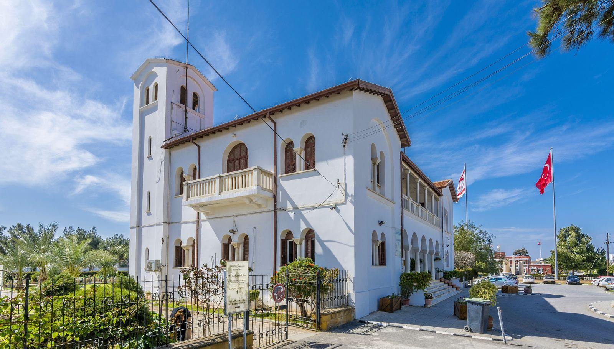
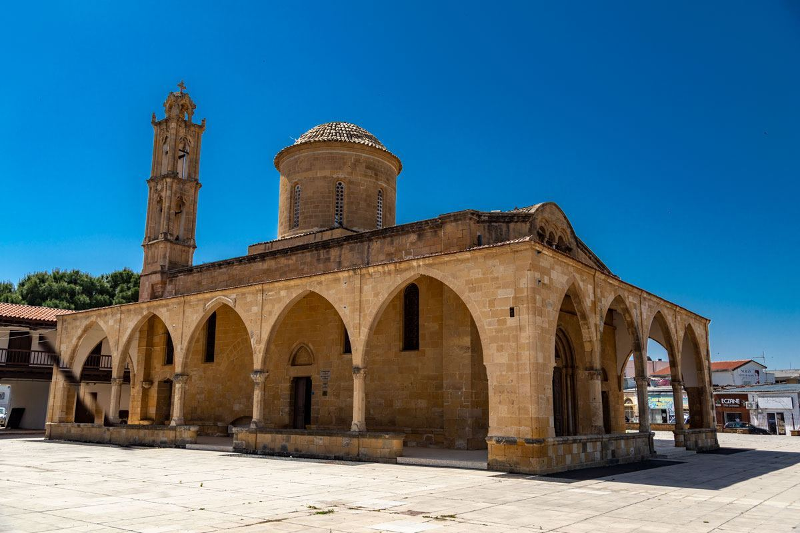
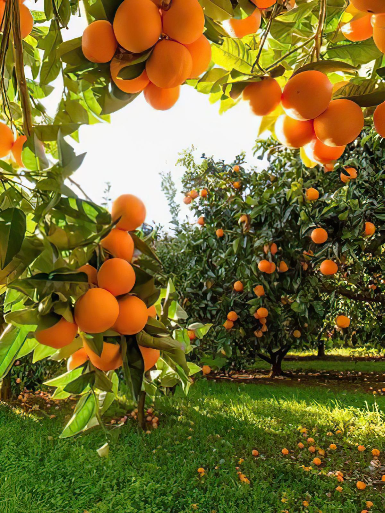
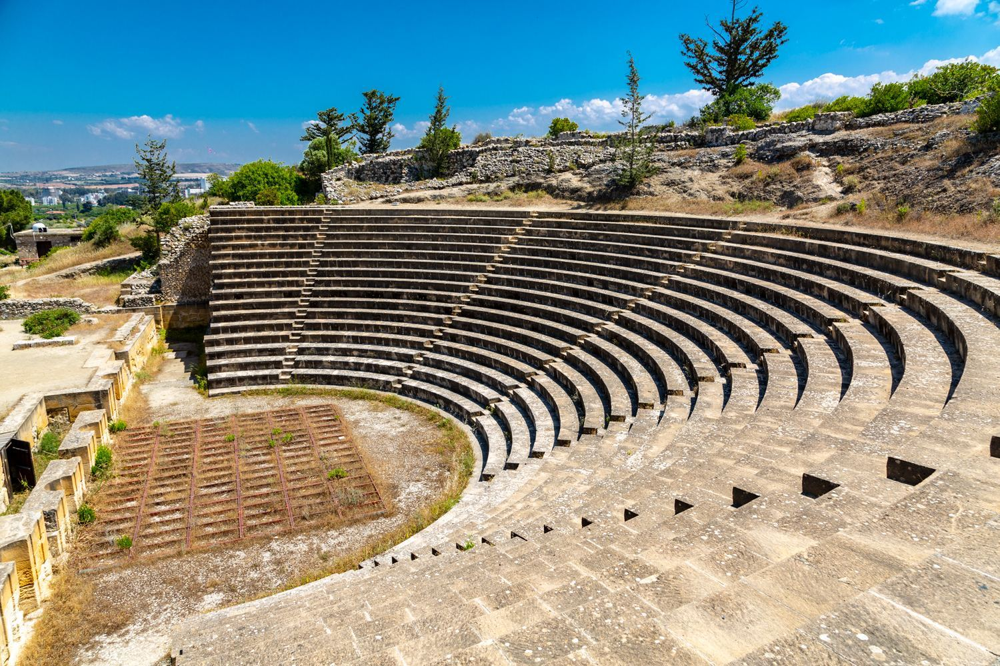
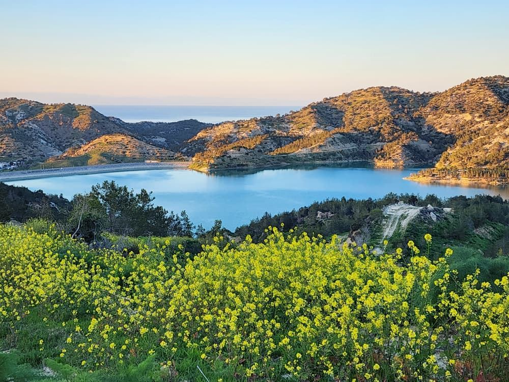

Güzelyurt literally means "beautiful country" in Turkish. The town sits at the heart of Cyprus's citrus growing region and hosts an Orange Festival every June — and the Church of St. Mamas, right in town, is dedicated to the unlikely patron saint of tax evaders.
Interactive Route Timeline
Use this embedded map to get a quick sense of the route before you set off, then follow the stops in order below.
Stops
Follow the timeline in order, but keep the route flexible depending on time, weather and opening hours.
Güzelyurt means "beautiful country" in Turkish. Long known as the agricultural heart of the island, the town hosts an annual Orange Festival every June celebrating the citrus that defines the region.
🚶♂️ 3 mins walk (250m) to the museum

Güzelyurt Archaeology & Natural History Museum
This is the route’s main cultural stop, providing detailed background on the ancient civilizations of the region.
Housed in a former bishop's residence next to St. Mamas Church, the museum's collection spans from the Neolithic period through the Byzantine era, including jewellery and ceramics found across the wider district.
🚶♂️ 1 min walk next door

St. Mamas Church & Icon Museum
A historic, religious-cultural stop that pairs naturally with the museum right next door.
St. Mamas is, unusually, the patron saint of tax evaders — according to local legend he once tamed a lion sent to fetch him for questioning over unpaid taxes, and rode it back into town himself. The church's carved sarcophagus is still a site of local pilgrimage.
🚗 10 mins drive (5 km) into the agricultural belt

Orange Groves / Agricultural Roads
Güzelyurt is deeply connected with citrus. A short scenic drive through these orchards establishes its signature identity.
The groves around Güzelyurt are irrigated by underground springs that also support grapefruit, apples and melons, which is part of why the region is sometimes called the fruit garden of Cyprus.
🚗 15 mins drive (12 km) toward the coast
📸 Best Photo Spot

Soli Ancient City Landmark
Take a scenic historical detour to the ancient ruins of Soli. Witness the exceptionally preserved bird mosaics and majestic theater structures.
Discover one of Northern Cyprus's most significant archaeological sites, where Roman mosaics, an ancient basilica, and a remarkably preserved theatre reveal centuries of history.
🚗 10 mins drive (8 km) along the shore

West-side Nature Stop
End with a calm nature outlook. It rounds out the journey nicely and leaves plenty of space for landscape photography.
The countryside west of town, toward the ancient sites of Soli and Vouni, offers a quieter, less-visited side of Güzelyurt worth the extra detour if time allows.
Practical info
This route works best by car.
Museum and church hours should be checked before departure.
Bring water and plan stops because attractions are spread out.
Best for visitors who want a quieter, less crowded environment.
Insider tip
During citrus season, many roadside stalls sell freshly picked oranges, lemons, and homemade juices. It's one of the simplest ways to experience the region's agricultural heritage while supporting local growers.
🎧 Listen to the Citrus Valley Tip:
Read the transcript
Welcome to the west side. To get the most out of Güzelyurt, stop treating it like a rushed, check-the-box tourist destination. The true magic of the orange town is its slow, slow rhythm. Give yourself extra time to get slightly lost on the dirt roads winding directly through the citrus orchards, and always stop for a traditional coffee in the central market.